The Kick Serve: Part 4:Prehabilitation¶
Chris Lewit
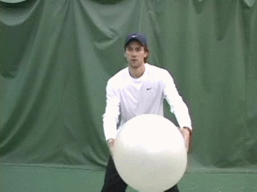
Prehabilitation means regular flexibility and strength training.
In the first article on the kick serve, I presented the technical reference points (Click Here) for developing the motion. The second article covered drill progressions for all the variations. (Click Here.) Then in the third article we discussed the various controversies regarding teaching and hitting the kick and detailed 5 common errors I see in trying to develop the motion. (Click Here.)
Now in this final article, I want to present the last critical component in my system. This what I call my prehabilitation program, something I use with my students everyday at my academy. Prehabilitation has two parts: flexibility training and strength training.
In my opinion a dual training program of this type is critical for keeping the back and shoulders healthy and strong for high performance players - or any player - who wants to develop the kick as part of the offensive repertoire of a complete server.
So this article presents over 20 exercises drawn from a wide range of disciplines and training methodologies synthesized into a original training program that I believe will produce awesome results for any player.
I truly believe that we have become so conservative and cautious in teaching the kick serve that our players are often disadvantaged technically and tactically when they get to the world-stage. American players often don't develop sufficient serving heaviness and/or angled placements. At the highest levels of competition, these seemingly subtle technical and tactical differences can separate a top 100 player from top 10.
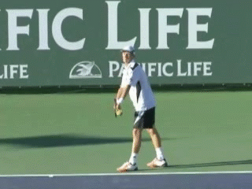
The kick serve adds subtle strategic advantages that can make a competitive difference.
I remain cautiously optimistic that with more sport science study, the myth of the dangerous kick serve will be debunked, and American coaches will start teaching this serve to our young future champions. So let’s get into the nitty-gritty of the prehabilitation program I have created for my students.
Schedule
The prehabilitation exercises increase both flexibility and strength in the critical areas of the body for the kick. Some do both simultaneously. They are part of a larger, full-body stretching and workout program that my students regularly perform—something I recommend for all competitive players.
I like to see my students stretching working on these exercises daily—but a minimum of 3 times a week. Every player and coach can integrate them how they see fit in their own training. But as a starting point I’d recommend picking 10 exercises and doing one set of multiple reps. Then over time, increase the number of exercises, the number of sets, and the number repetitions.
I believe that the students in my kick serve system are on the road to learning world-class kick serves, but more importantly, the stretching and strengthening part of the system is the insurance policy to protect them from any potential injury. Sometimes injuries are unavoidable, especially out on the rigorous junior or professional circuit. But my players tend to be more resilient because of the extra attention we pay to prehabilitation rather than rehabilitation; they recover faster from injuries and have fewer missed tournaments. I hope you get a chance to experiment with incorporating some of what I have presented into your own training regimes, and let me know what you think.
Note: Special thanks to my wife Kimberleigh Weiss-Lewit, and my student Hannah Shteyn for their great help in doing the demonstrations!
Flexibility and Strengthening Exercises
Upward Facing Dog
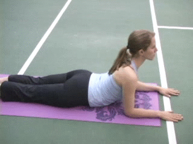
This yoga stretch opens up rib cage and increases the flexibility of back. Also increases core strength.
Boat
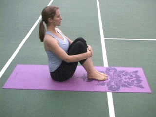
This is another yoga core strengthener.
Wheel
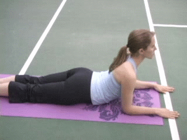
This yoga exercise stretches the back stretch and opens the shoulders.
Swimming
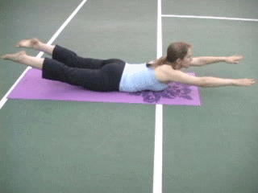
This is a pilates exercise that strengthens the lower back and the abdominals.
Bridge
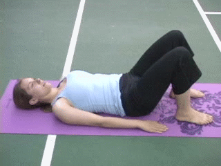
The stretch opens the chest and stretches the back.
Ball Crunches

Ball crunches strengthen the abdominals.
Advanced Bridge
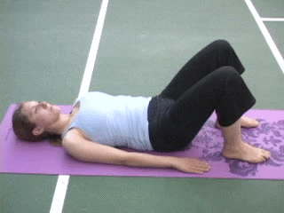
The Advanced Bridge gives an even deeper stretch of the chest and the back.
The Hundreds
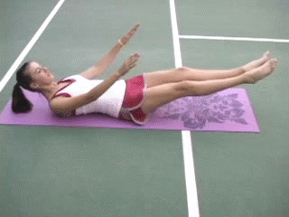
This is a pilates core strengthener.
The Full Wheel
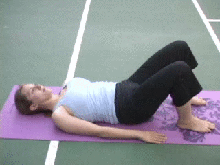
The full wheel is a complete back and shoulder stretch.
Medicine Ball Overhead Throws
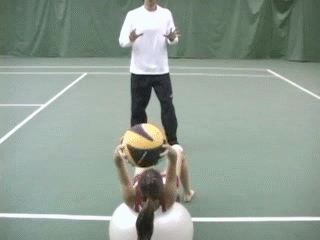
This pullover movement strengthen the arms, chest, and core. A great exercise to build explosiveness in upper body.
Forward Bend to Plow
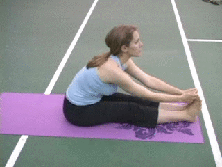
Another yoga exercise that stretches the spine and opens the back.
Medicine Ball Tosses
Medicine ball tosses evelop explosiveness in the arms and core for groundstrokes and serve.
Cat Pose
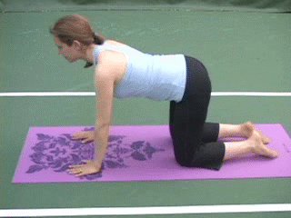
This a yoga shoulder stretch.
Medicine Ball Rotation
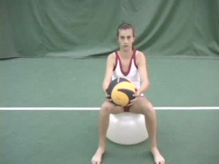
This exercise develops core strength and stability.
Beginner Back Stretch
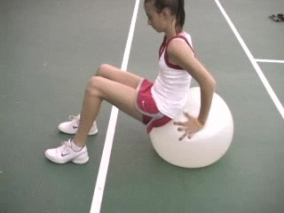
Use this to stretch the back before or after serving.
Standing Rows
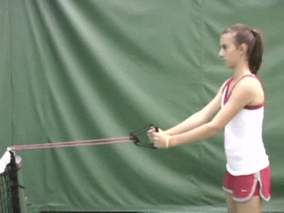
This exercise trengthens the upper back muscles which decelerate the arm in the serve motion.
Beginner Chest and Arm Stretch
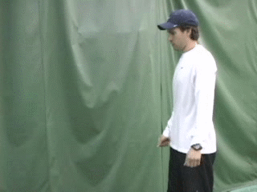
This is a great basic exercise to stretch the chest and arms.
Lifting the Trophy
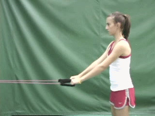
An important exercise that strengthens the shoulders.
Shoulder Stretches
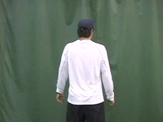
This stretch increases the range of motion of the buttscratch--the key position in developing the kick.
Rotator Cuff Internal/External Rotation
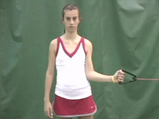
This combination exercise strengthens rotator cuff, a commonly injured area in the shoulder.
Beach Ball Stretch
This stretch is a great way to prepare the back and shoulders for serving.
Sampras Stretch
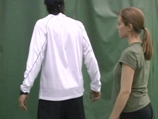
This stretches the arms and upper back. Sampras could touch his elbows together!
Dumbbell Triceps Extension
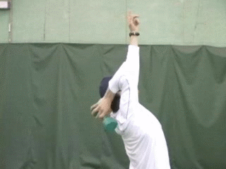
This strengthens the triceps and to a lesser extent the shoulder, thereby reinforcing proper kick serve technique.
Manual Buttscratch Stretch/Resistance Exercise
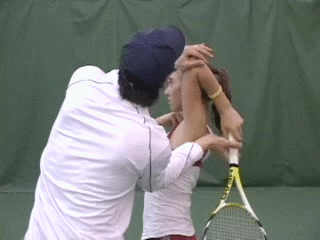
This increases the range of motion in the shoulder to create a deeper buttscratch. Can also be transformed into a strengthening exercise for the triceps by resisting against the upward snap.

Chris Lewit, former #1 for Cornell and Pro Circuit player, has coached numerous top 10 nationally ranked juniors and is a leading coach, educator, and author. He has written two best-selling books, The Secrets of Spanish Tennis and The Tennis Technique Bible.
Chris runs a popular high performance summer tennis camp in the beautiful mountains of Vermont and coaches players world-wide through his virtual school, CLTA Online (CLTA.teachable.com).
Chris also produces a weekly high performance tennis video talk show and podcast, The Prodigy Maker Show, which is available on Apple Podcasts and all other podcasting directories. All shows can be accessed at ProdigyMaker.com.
Check out Chris's blog, also at ProdigyMaker.com for free articles on high performance junior development and Spanish training. Learn about his camp at ChrisLewit.com or visit the online academy at CLTA.teachable.com
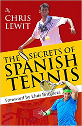
The Secrets of Spanish Tennis
What makes Spanish tennis so unique and successful? What exactly are those Spanish coaches doing so differently to develop superstars like Rafael Nadal and David Ferrer that other systems are not doing? These and other questions are answered in The Secrets of Spanish Tennis, the culmination of five years of study on the Spanish way of training by USTA High Performance Coach Chris Lewit.
Click Here to Order!